Con CargaYa Vendedor despachas tu mercancía a la placa del comprador, el carretillero sabe adónde ir y ves cuándo la recibió. Sigue estos pasos:
- Crea tu cuenta
- Instala el ícono en tu teléfono
- Las pestañas
- Indica qué vendes y dónde estás
- Agrega a tus carretilleros e imprime su credencial
- Despacha la mercancía
- Muéstrale la ficha al carretillero
- Sigue tus despachos
- Paga al carretillero
- Revisa tu historial y descárgalo en Excel
- Paga tu mensualidad
- Invita a tus compradores
1Crea tu cuenta
- Abre el enlace o escanea el QR de CargaYa Vendedor que te dio la administración.
- Toca Soy nuevo.
- Escribe el nombre de tu puesto, tu teléfono e inventa un PIN de 6 números.
- Toca Crear cuenta.
💡 Anota tu PIN. Si lo olvidas: toca Ya tengo cuenta → 🔑 ¿Olvidaste tu PIN?, escribe tu teléfono y te llega un código por SMS para elegir un PIN nuevo.
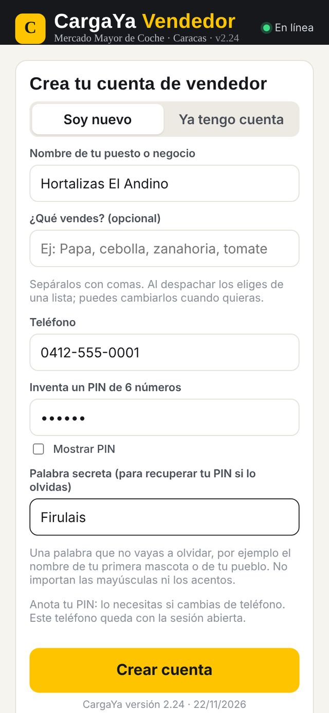
2Instala el ícono en tu teléfono
- Al terminar el registro aparece “¡Listo! Ahora instala el ícono”.
- Toca Instalar ícono y luego Instalar.
- Desde ahora abres CargaYa con el ícono amarillo “CargaYa Vend.” de tu pantalla.
💡 En iPhone: en Safari toca Compartir → Agregar a pantalla de inicio. Si abriste el enlace dentro de WhatsApp, toca ⋮ → Abrir en Chrome primero.
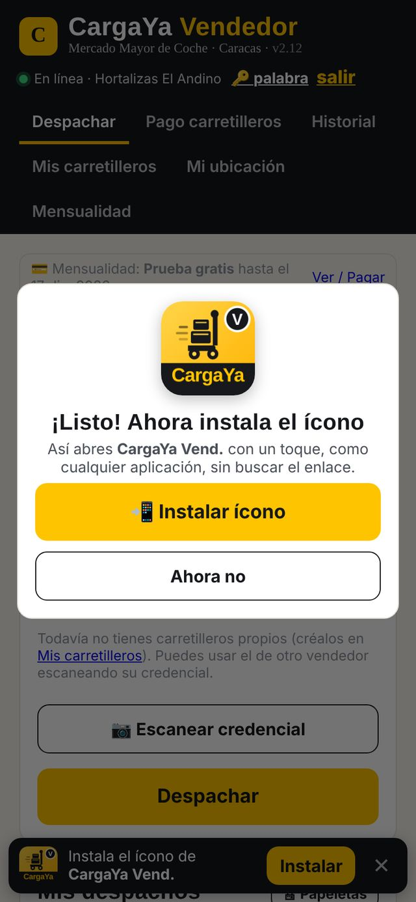
3Las pestañas
- Despachar: mandar mercancía a un comprador.
- Pago carretilleros: lo que les debes a tus carretilleros.
- Historial: todos tus despachos y el Excel.
- Mis carretilleros: agregarlos e imprimir su credencial.
- Mi ubicación: qué vendes y dónde está tu camión.
- Mensualidad: el estado y el pago del mes.

4Indica qué vendes y dónde estás
- Entra a Mi ubicación y toca Editar.
- Escribe qué vendes (ej: papa, cebolla), elige tu sector y una referencia (ej: camión rojo).
- Toca Guardar.
- Para marcar el lugar exacto: 📡 Usar mi GPS o 🗺 Marcar en el plano y toca dónde está tu camión.
💡 Así los compradores te encuentran y el carretillero ve el camino desde tu camión.
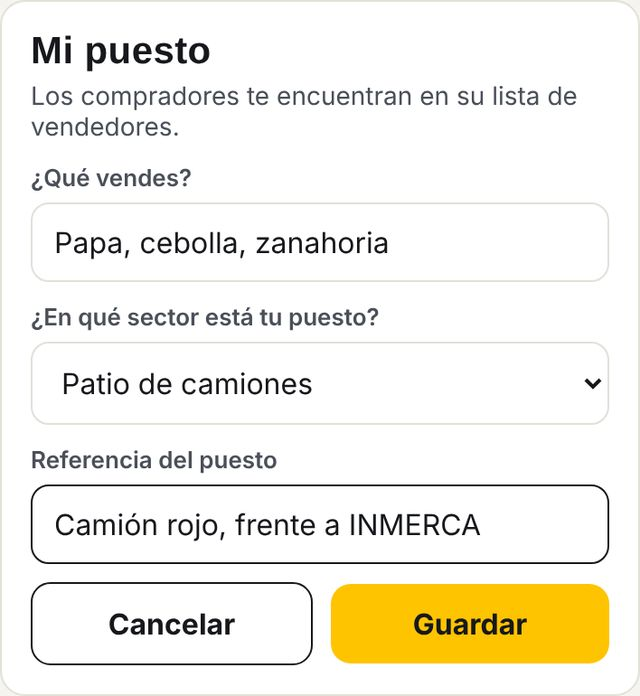
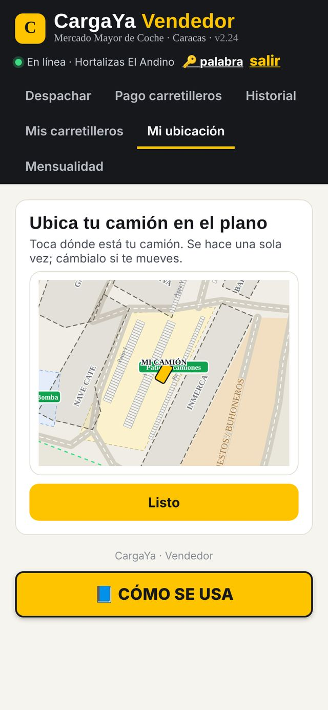
5Agrega a tus carretilleros e imprime su credencial
- Entra a Mis carretilleros.
- Escribe el nombre o apodo y toca Agregar. El número se asigna solo.
- Toca Imprimir credenciales: salen 4 por hoja A4. Recórtalas, plastifícalas y perfóralas para colgarlas al cuello.
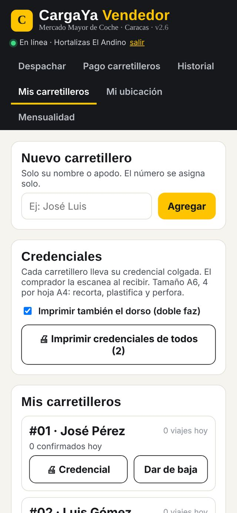
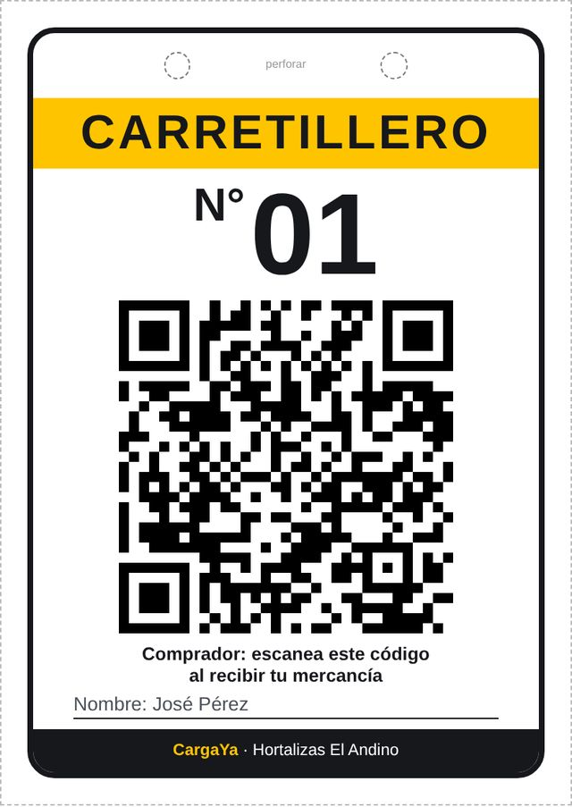
6Despacha la mercancía
- En Despachar, escribe la placa del comprador. Aparece su vehículo y su zona.
- Escribe cada producto y sus bultos. Para otro producto toca Agregar ítem.
- Elige el carretillero tocando su número, o Escanear credencial si es de otro vendedor.
- Toca Despachar.
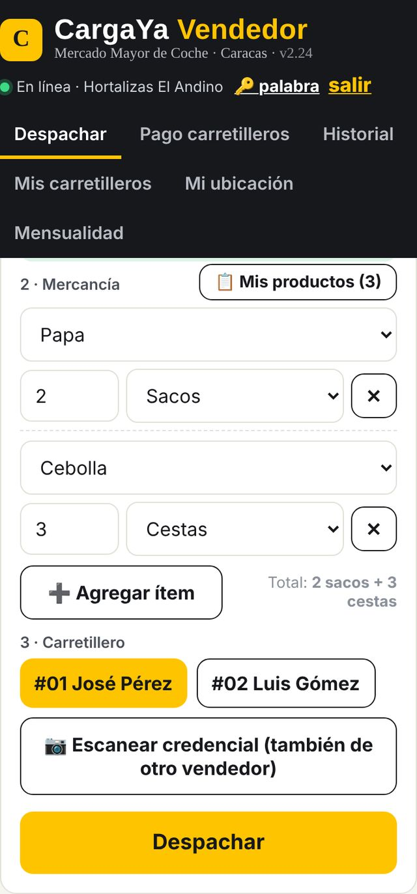
7Muéstrale la ficha al carretillero
- Aparece la ficha con la zona en grande, el vehículo, la placa, lo que lleva y el plano con el camino.
- Muéstrasela al carretillero y toca Listo, salió.
- Si el carretillero no tiene teléfono, toca Imprimir papeleta en papel.
💡 En Despachar, el botón 🖨 Papeletas imprime papeletas en blanco para llenar a mano y marcar la ubicación con una ✗.
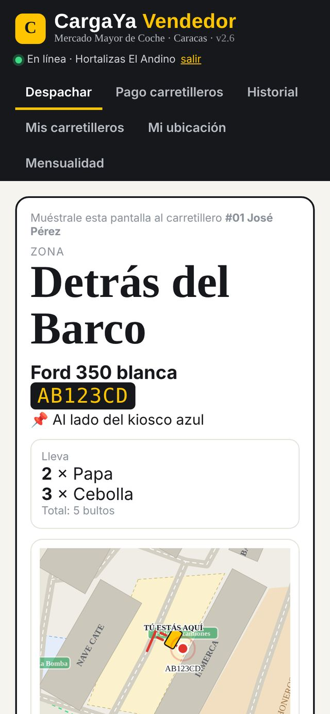
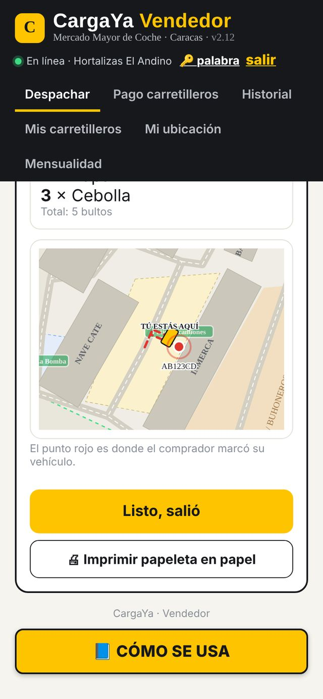
8Sigue tus despachos
- En Mis despachos cada envío muestra su estado: En camino o Entregado.
- Cuando el comprador confirma, pasa a Entregado solo, sin recargar.
- Si el comprador no tiene la app, puedes tocar El comprador confirmó de palabra.
- Toca Quitar para limpiar la lista: todo queda guardado en el Historial.
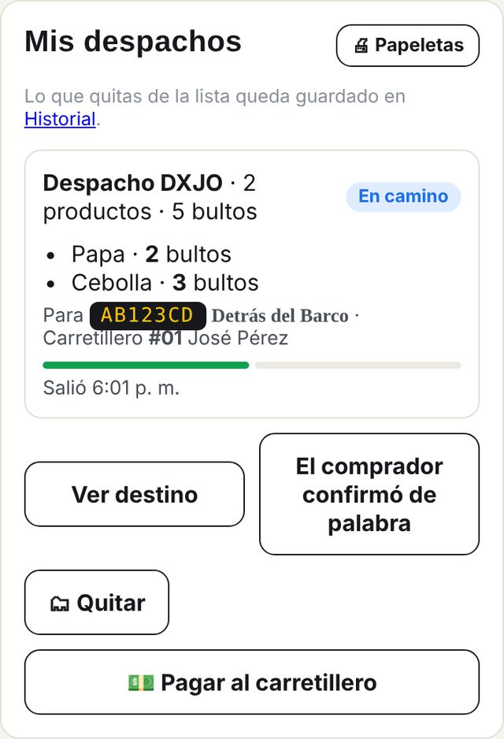
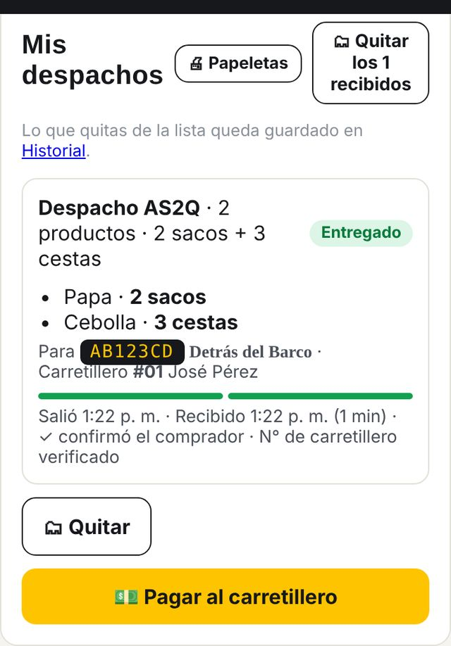
9Paga al carretillero
- Toca Pagar al carretillero en el despacho (o en la pestaña Pago carretilleros para pagar varios viajes juntos).
- Escribe el monto que acordaron, elige Efectivo o Pago Móvil y toca Registrar pago.
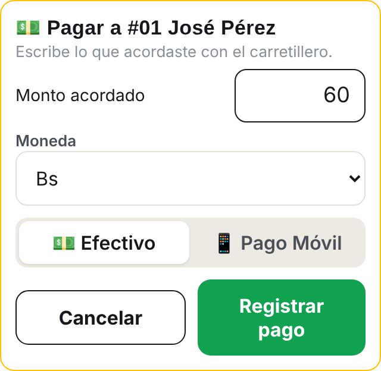
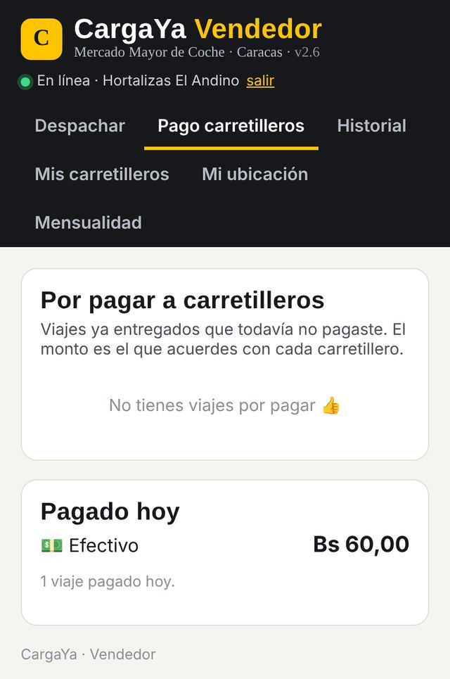
10Revisa tu historial y descárgalo en Excel
- Entra a Historial.
- Elige el período y el estado.
- Toca Descargar en Excel.
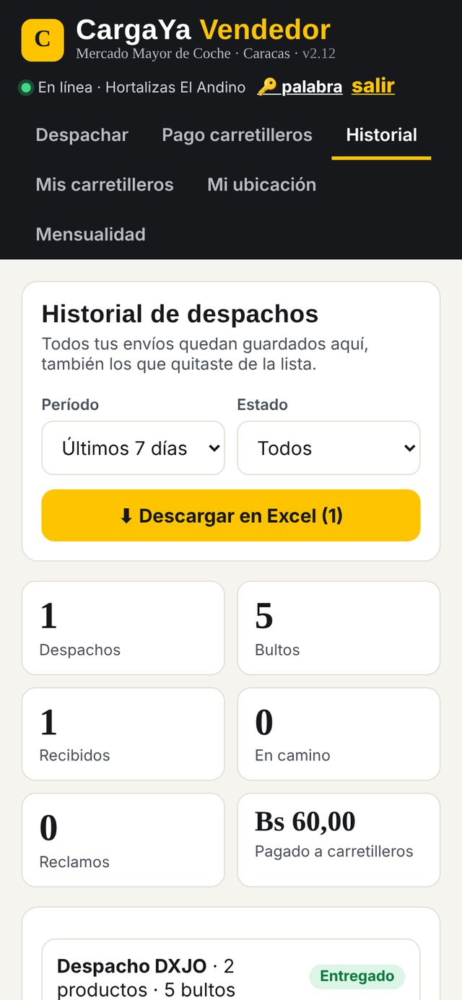
11Paga tu mensualidad
- Entra a Mensualidad y toca Pagar mes.
- Haz el Pago Móvil a los datos que aparecen (con Copiar los pasas a tu banco).
- Escribe la referencia, el banco, el teléfono y el monto. Si puedes, adjunta la captura.
- Toca Enviar pago. La administración lo revisa; mientras tanto puedes seguir despachando.
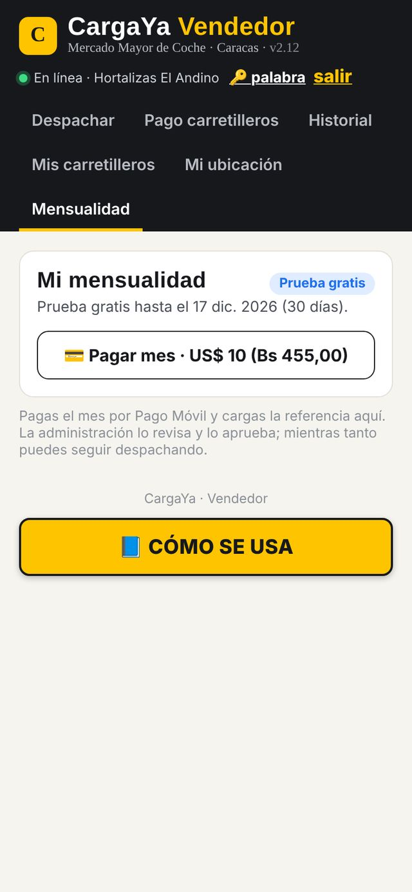
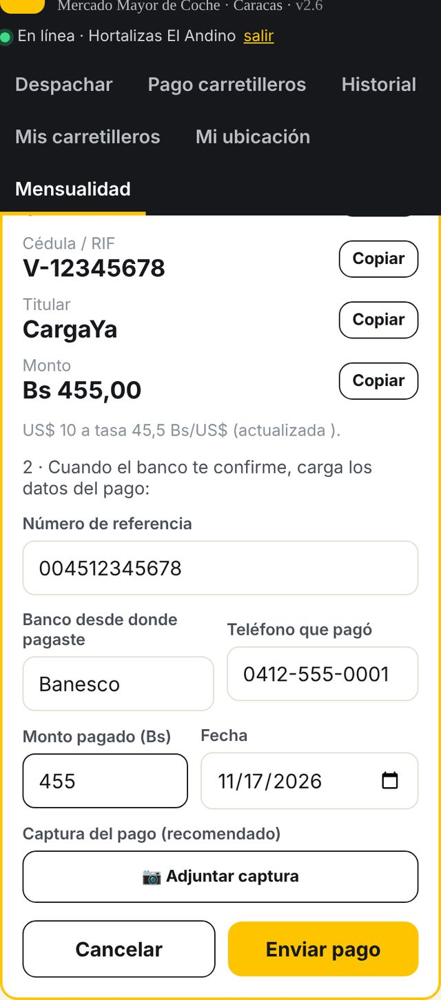
12Invita a tus compradores
- En Mi ubicación, tarjeta Invita a tus compradores.
- Comparte el QR o el enlace por WhatsApp.
- El comprador que entra con tu invitación te tiene primero en sus favoritos.
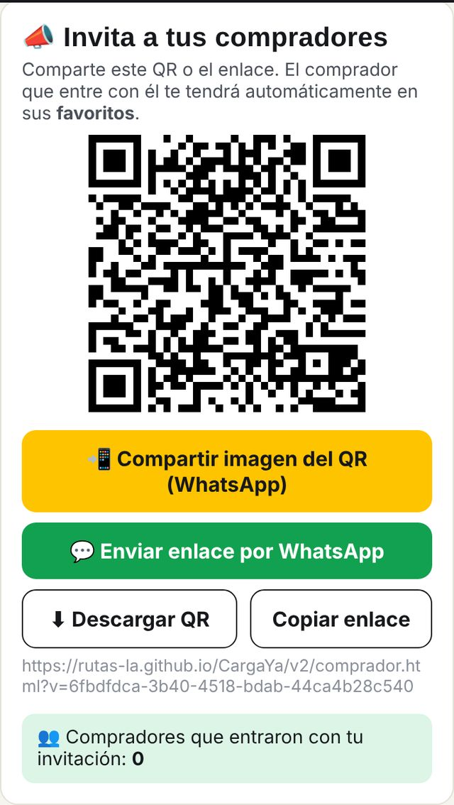